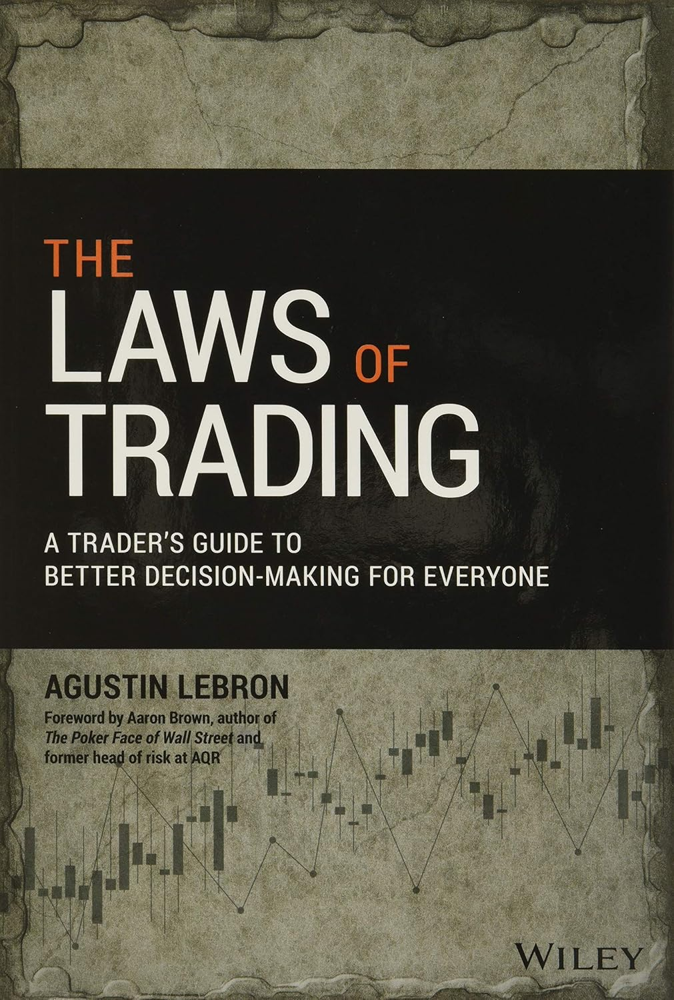

每当一笔划算的交易摆在面前，阿古斯丁·勒布伦（Agustin Lebron）都会先问一个扫兴的问题：这笔交易为什么轮得到我？如果对手方比你懂得多，"便宜"往往只是逆向选择埋下的陷阱。这条"先搞清楚自己为什么要做这笔交易，再动手"的原则，是《交易的法则》全书的第一条法则，也是理解这本书的钥匙。
勒布伦2008年进入简街资本（Jane Street）——全球最大的做市商之一——担任交易员和研究员，交易过ETF、期权和各类统计套利策略，后来创办咨询公司Essilen Research，帮助企业把现代决策方法引入日常经营。进入金融业之前，他做的是无线电芯片设计的工程师。这样的履历决定了本书的底色：它不是一本教你战胜市场的书，而是把职业做市商在高度对抗、信息不对称的环境里磨出来的思维，翻译成任何人都能用的决策方法。全书2019年由Wiley出版，风险管理专家亚伦·布朗（Aaron Brown）作序。
书的骨架是十一条"法则"，每一条都短促得像交易台上的口令。除了开篇的"动机"，还有"逆向选择：你永远不会对自己成交的数量感到满意""风险：只承担你能获得报酬的风险，其余的对冲掉""流动性：用最具流动性的工具去承担某个风险""优势：如果你没法在五分钟内讲清自己的优势，那它多半不怎么样""模型是优势的表达""成本与容量：如果你觉得成本相对优势可以忽略不计，那你至少在其中一件事上判断错了""可能性：从未发生过，不代表不会发生""让各方的激励对齐，是值得花时间的事""不掌握技术与数据，你就在输给掌握它们的人"，以及"如果你没有在变得更好，你就在变得更糟"。
勒布伦真正的用意，是把这些法则从交易台搬进生活。招聘时的信息不对称，本质上就是逆向选择；办了却不去的健身年卡，是没算清流动性的成本；团队内耗，往往源于激励没有对齐。这本书教的不是行情判断，而是一套追问自己的习惯：我的优势到底在哪里？这个机会为什么轮得到我？我把全部成本都算进去了吗？《宽客》网站wilmott.com的创办人、量化金融证书课程的设计者保罗·威尔莫特（Paul Wilmott）称这本书"写得既有趣又有见地"。
截至目前，这本书尚无官方中文译本，上文书名系直译。对做市与量化交易感兴趣的人，它是一扇难得的、由内部人打开的窗；而对更多只想把决策做得更清醒的读者，它证明了交易台上的那套纪律，其实处处适用。